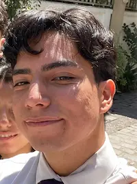

Rodrigo Pacheco | WDD 130
My name is Rodrigo Pacheco, i'm 21 years old and i was born in Chile. I love music, reading and doing martial arts. i'm also into computers, i love playing videogames in it and using it to simplify my life, that's why i'm studying web and computer programming on Byu Idaho. I'm the middle son in my family. i have an older brother and a younger sister. my older brother it's 10 years older than me, while my sister is 6 years younger. My mother's name is Ariela and my father's name is Sebastian. i have 4 dogs and 1 cat so my family it's a little bit big. My favorite food is lazagna and my favorite season is fall. i think one of the things that changed my life was learn how to play the guitar. it was a great challenge, but it taught me a great lesson about diligence and loving what you learn. i have a loving girlfriend named Catalina and we hope to get married soon. but we are working on it, planning well how to build a strong foundation on Christ and a good financial situation, or in other word, a self reliant plan. I love her, and she's the love of my life.